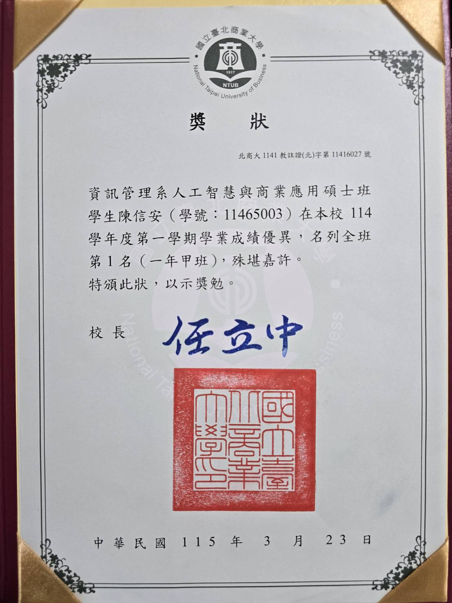

學業表現・獲獎紀錄2026
114 學年度第 1 學期學業成績優異
國立臺北商業大學・資訊管理系人工智慧與商業應用碩士班
114 學年度第 1 學期學業成績名列一年甲班全班第 1 名，獲國立臺北商業大學頒發獎狀。
學業成績優異
全班第 1 名
就讀班級
資訊管理系人工智慧與商業應用碩士班，一年甲班。
紀錄資訊
- 證書日期
- 學年度
- 114 學年度第 1 學期
- 學校
- 國立臺北商業大學
- 學業名次
- 一年甲班全班第 1 名
- 獲獎者
- 陳信安
日期為獎狀所載的頒發日期。
CERTIFICATES & MILESTONES
留下這一段紀錄。
點擊證書，可在新分頁查看原圖。

學業成績優異獎狀
記錄 114 學年度第 1 學期一年甲班全班第 1 名的學業表現。
返回 About 活動紀錄
活動、研究與學習路上的累積。